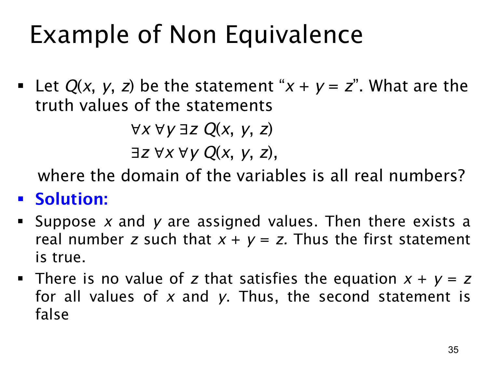

L1.2 · 第 35 页讲解原文
查看这一页课件

三个变量的非等价例子：和能随输入改变
令三元谓词 Q(x,y,z) 表示 x+y=z，三个变量的论域都是实数。课件比较
∀x∀y∃zQ(x,y,z)与∃z∀x∀yQ(x,y,z).
第一式为真。先任意选定 x,y，然后令 z=x+y，所得 z 仍是实数，并满足等式。不同的 (x,y) 可以使用不同的 z；例如 (1,2) 用 z=3，(4,5) 用 z=9。这说明给定两项后总能找到它们的和。
第二式为假。它要求在看到任何 x,y 之前，先选出一个固定的 z，使所有实数对都满足 x+y=z。取 (x,y)=(0,0) 会迫使 z=0，但取 (x,y)=(1,0) 会迫使 z=1；一个固定数不可能同时等于 0 和 1。
两个公式在同一实数论域中一真一假，所以不逻辑等价。本页与上一页的加法逆元例子使用同一思路：存在量词若位于全称量词之后，见证可以依赖前面选择的变量；若位于全称量词之前，则必须选出一个适用于所有后续取值的共同见证。